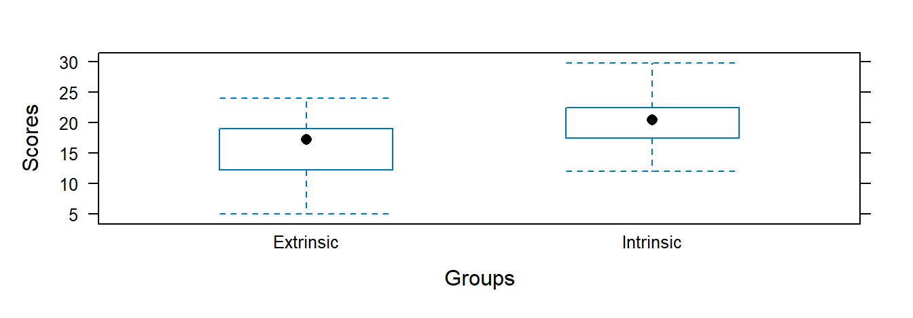
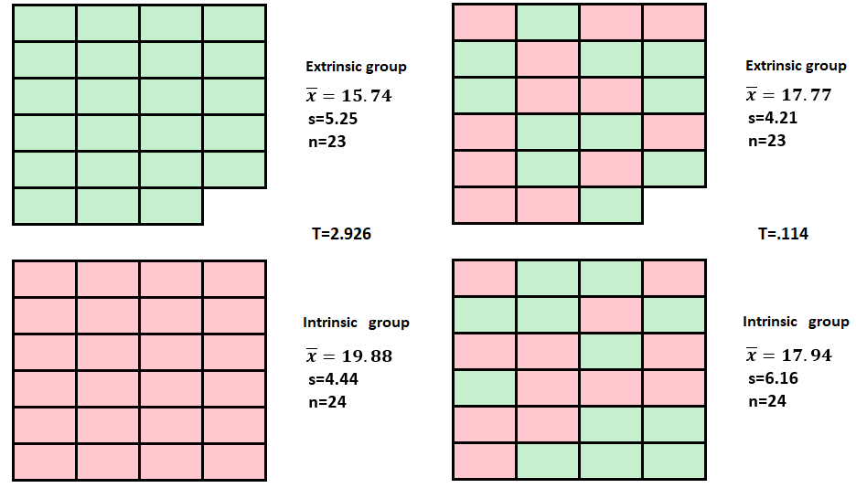
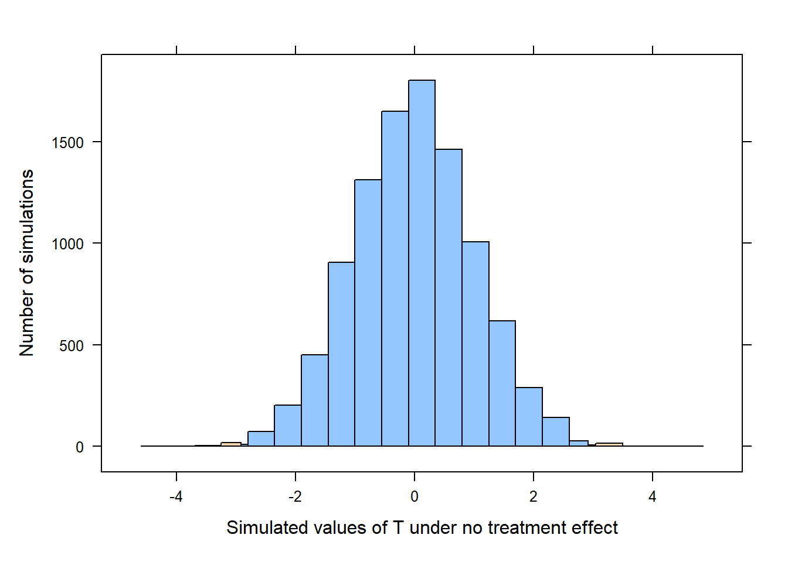
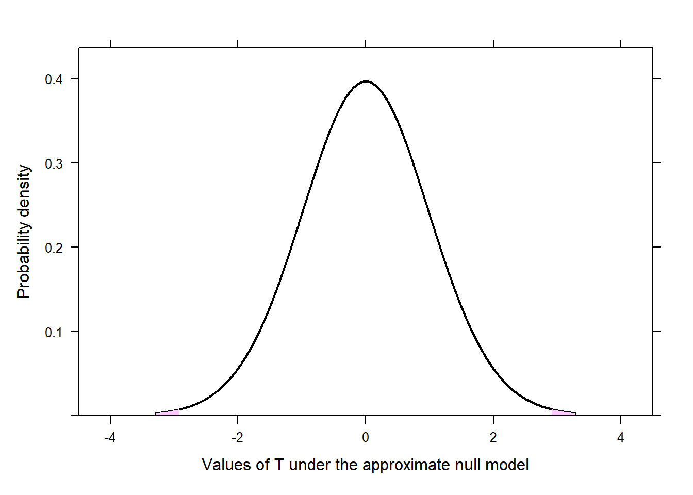

11 Statistical inference framework via a case study
Statistical inference is the practice of making decisions from data in the presence of uncertainty. The common procedures for making statistical inferences include
Hypothesis Testing: Uses a suitable sampling, assignment, or statistical model to assess two competing hypotheses about a population parameter or treatment effect.
Confidence Intervals: A range of plausible values for the population parameter or effect value.
11.1 Hypothesis testing framework
This case study is adapted from Ramsey and Schafer (2013) and is discussed in Chapter 2: Reward systems are integrated into schools and in the workplace, but are rewards operating in precisely the opposite way from what is intended? Do external incentives affect creativity? To address this, we will use a study that investigated whether people tend to display different creativity levels when they are thinking about intrinsic or extrinsic motivations. Undergraduate students of similar creative writing experience from a private university in New England were randomly assigned to one of two groups. One group received an intrinsic and the other an extrinsic questionnaire intended to focus their attention on that type of motivation. All subjects were instructed to write a haiku, and those poems were evaluated for creativity by a panel of judges.
Based on the collected data, do subjects thinking about intrinsic motivations display different creativity than subjects who were thinking about extrinsic motivations?
The sample mean (based on a sample of 24) of the intrinsic group mean is 19.88 and standard deviation 4.44. For the extrinsic group the sample mean (based on a sample of 23) is 15.74 and standard deviation is 5.25. The difference between the sample means is 4.14. Is the difference large enough to convince you that subjects thinking about intrinsic motivations display different levels of creativity than subjects who were thinking about extrinsic motivations? Or is this difference of 4.14 small enough that one may wonder if the size of difference is more due to chance (random/sampling/natural variability) and not due to a motivation type effect.
If the study was reproduced, the results would differ. But if results are different each time, how does one determine how large (in magnitude) the differences in sample means should be in order to say that subjects thinking about intrinsic motivations display different levels creativity than subjects who were thinking about extrinsic motivations?
In terms of the null and alternative hypothesis we have:
\(H_o:\) There is no difference in creativity under extrinsic and intrinsic motivations.
\(H_a:\) Subjects thinking about intrinsic motivations display different levels of creativity than subjects who were thinking about extrinsic motivations.
At this stage, consider how the effect intrinsic motivation on creativity can be quantified. One approach is to quantify the effect by using the difference between the true mean creativity score under intrinsic and extrinsic motivation. Let the true mean under intrinsic motivation be denoted as \(\mu_{int}\). Similarly, we denote the true mean under extrinsic motivation as \(\mu_{ext}\). If motivation type has no effect on creativity, then we should expect \(\mu_{int}-\mu_{ext}=\delta=0\), where \(\delta\) represents the effect of intrinsic motivation on creativity. If subjects thinking about intrinsic motivations display more or less creativity than subjects who were thinking about extrinsic motivations, then this would correspond to \(\mu_{int}-\mu_{ext}\neq 0\) or \(\delta \neq 0\). Thus, \(H_0\) and \(H_a\) may be expressed as
\[H_0: \mu_{int}-\mu_{ext}=0 \qquad H_a:\mu_{int}-\mu_{ext} \neq 0\]
or
\[H_0: \delta=0 \qquad H_a:\delta \neq 0\]
Any hypothesis test is always conducted under the assumption that the null hypothesis is true. The observed data will either provide sufficient evidence to reject this assumption or fail to reject this assumption. A test statistic is simply a sample statistic (numerical summary of the data). An extreme value of the test statistic will be consistent with the idea reflected in \(H_a\).
What is considered extreme depends on the sign of \(H_a\). If the sign is \(>\), then extreme means really large. If the sign is \(<\), then extreme means really small. A \(\neq\) sign means extreme is really large or really small. To evaluate the evidence against the \(H_0\), we compare the observed value of the test statistic to what one would expect to obtain (for the value of test statistics) if \(H_0\) were true (i.e., under the null hypothesis). This will allow one to determine if the observed value of the test statistic is extreme or not if in fact \(H_0\) were true.
A test statistic could be any numerical summary statistic, but the form of the test statistic is generally chosen to have the following qualities:
An extreme value of the test statistic is consistent with the idea reflected in \(H_a\)
The distribution of test statistic under \(H_0\) can be obtained or is known. That is, to determine if the value of the observed test statistic is extreme, we need to know what range of values the test statistic can take under the null hypothesis. This distribution is generally referred to as a Null distribution.
A common test statistic for testing the above hypothesis is of the form:
\[T=\frac{(\bar{y}_{int}-\bar{y}_{ext}) -(\mu_{int}-\mu_{ext})}{\sqrt{\frac{s_{int}^2}{n_{int}}+\frac{s_{ext}^2}{n_{ext}}}}\]
where \(\bar{y}\), \(s\), and \(n\) represent the sample mean, sample standard deviation, and sample size for a given sample. Under \(H_0\), \(\mu_{int}-\mu_{ext}=0\), so the observed value of the test statistic is
\[T=\frac{(\bar{y}_{int}-\bar{y}_{ext}) }{\sqrt{\frac{s_{int}^2}{n_{int}}+\frac{s_{ext}^2}{n_{ext}}}}\approx 2.915\]
Using the unrounded sample means and standard deviations gives \(T=2.915292\); rounding inputs before calculation changes the result slightly. While a value of \(T=2.915\) (or larger) is consistent with the idea that \(\mu_{int}\neq\mu_{ext}\), is \(T=2.915\) large enough to convince you that in fact \(\mu_{int}\neq\mu_{ext}\), or is its value (\(T=2.915\)) simply due to chance (sampling/natural variability)? To decide between supporting or not supporting what is reflected in \(H_a\), we compute the chances or probability of observing \(T=2.915\) or larger or \(T=-2.915\) or smaller (since the sign in \(H_a\) is \(\neq\)), under the assumption that motivation type has no effect on creativity (\(H_0\) true). If this probability is very low, we would have reason to reject \(H_0\).
To compute this probability, we require the Null distribution of \(T\). That is, if \(\mu_{int}=\mu_{ext}\), what range of values can \(T\) take, and how often does a given range of values of \(T\) occur? If the study were replicated many many times in a scenario where the type of motivation has no effect on creativity (i.e., \(\mu_{int}=\mu_{ext}\)), then \(T\) could be computed for each replication to obtain the Null distribution of \(T\). Such an approach is unrealistic. In practice, one of two methods can be used to obtain the Null distribution.
Simulation-based approach – simulate sample data sets many times under the assumption that motivation type has no effect on creativity. Then calculate the proportion of these simulated sample data sets that provided a value of \(T\) of 2.915 or greater and a value of \(T\) of -2.915 or smaller.
Theory-based approach – Under certain assumptions, statistical theory provides a distribution model for the distribution of \(T\) under \(H_0\). This model can then be used to determine the proportion of times that \(T\) is 2.915 or greater or \(T\) is -2.915 or smaller
11.1.1 A simulation-based approach
A simulation-based approach is used here to illustrate a randomization test. Under the sharp null hypothesis that the questionnaire has no effect on any student’s score, each observed score would remain the same under either assignment. Reassigning the fixed scores according to the original random assignment mechanism, while preserving 24 intrinsic and 23 extrinsic assignments, then generates a null distribution. This sharp null is stronger than equality of the group means; equal means alone do not justify unrestricted shuffling.
Since the random shuffling of students between the two groups is independent of the type of motivation (intrinsic or extrinsic) that they are thinking about, any difference between the groups in terms of creativity is due to chance. That is, the size of the corresponding value of \(T\) is due to randomly shuffling students between the groups (not due to motivation type). Another way to view it is that chance enters through the random assignment of units to treatments and nothing else under \(H_0\). The figure below shows the results of one such simulation. The resulting size of \(T\) under this simulation represents one observed value of \(T\) due to chance when the null hypothesis is assumed to be true.

This simulation process is repeated enough times so that we have a good idea of the shape of the Null distribution of \(T\). The figure below shows a histogram of \(T\) obtained from 10,000 simulations, with the x-axis representing the range of the value of \(T\) under \(H_0\). How often would one observe a value of \(T\) of -2.915 or smaller, or observe a value of \(T\) of 2.915 or greater?

Out of the 10,000 randomizations, 50 produced \(|T_{sim}|\geq |T_{obs}|\), counting both tails. Including the observed assignment gives a Monte Carlo p-value of 0.0051. Such an extreme statistic is unusual under the sharp null. At a prespecified \(\alpha=.05\), we reject that null. Random assignment supports a treatment comparison for these students; generalization beyond them requires additional justification.
11.1.2 Theory-based approach
Under suitable conditions, Welch’s statistic has an approximate t distribution with Welch–Satterthwaite degrees of freedom. Here those degrees of freedom are 43.108. The central limit theorem supports a large-sample normal approximation for differences in means under appropriate independence and finite-variance conditions. It does not establish an exact t distribution, nor does it imply \(df=\min(n_{int}-1,n_{ext}-1)\). For small samples, the adequacy of Welch’s approximation also depends on the population distributions.

Using Welch’s approximate null distribution gives a two-sided p-value of 0.005618. At \(\alpha=.05\), we reject equality of mean creativity scores under this model. The intrinsic group has the higher estimated mean. Welch’s p-value and the separately simulated randomization p-value can differ because their null models and calculations differ.
11.1.3 Two-sided and one-sided hypothesis test.
The case study uses a two-sided test because either direction addresses the research question. A correctly calibrated one-sided test can control Type I error when its direction is specified before inspecting the results. Choosing the favorable direction after seeing the data can inflate that error rate and encourage confirmation bias1. These modules use two-sided tests.
11.1.4 p-values
A p-value is the probability, under the null model and its assumptions, of a test statistic at least as extreme as the observed statistic. It is not the probability that the null hypothesis is true or that a result is due to chance. Smaller p-values indicate greater incompatibility with the null model; large p-values do not establish that the null is true. Interpret a p-value alongside the study design, effect estimate, uncertainty, and practical importance. Labels such as “strong evidence” and boundaries such as .05 or .10 are conventions, not universal scientific cutoffs.
For the case study, Welch’s p-value is 0.005618. When the p-value is small compared to a set threshold, results are statistically significant. This means the data provide such strong evidence against null hypothesis, that we reject the null hypothesis in favor of the alternative hypothesis. This threshold is called the significance or \(\alpha\) level, which is generally denoted by \(\alpha\). The value of \(\alpha\) is set by the practitioner or researcher, but in practice \(\alpha\) is generally set to \(0.01\), \(0.05\), and \(0.10\), with \(0.05\) being the most common. By choosing an \(\alpha\) level, you are conveying to the reader the strength of evidence required to reject \(H_0\). Regardless of the test used, the decision rule is as follows:
- If p-value \(\leq \alpha\), we reject \(H_0\).
- If p-value \(> \alpha\), we fail to reject \(H_0\).
If \(\alpha=.05\), \(H_0\) is rejected, so we may support what is reflected in \(H_a\). That is, based on the size of the p-value, we have strong evidence that subjects thinking about intrinsic motivations display more creativity than subjects who were thinking about extrinsic motivations at \(\alpha=.05\).
A word of caution with the idea of “statistically significant”. Note that while we concluded the result was statistically significant, it only indicated that the required amount of evidence against \(H_0\) was obtained. However, this result gives us no information regarding the size of the difference (the effect) in creativity scores between the groups. Any effect, no matter how inconsequential, can provide a small p-value if the sample size is extremely large. Also, a large effect may produce a large p-value if the sample size is small. Note that one may select an \(\alpha\) that is smaller or larger than \(0.05\) depending on the consequence of the conclusion reached from a test. Regardless of the \(\alpha\) chosen, the size of the effect and what is practical should be conveyed as well. For those interested on more discussion about the p-value, potential misuse of p-values, and caution with statistical significance, consider reading Baker et al. (2016), Amrhein et al. (2019), and Lakens (2021).
11.1.5 General steps in hypothesis testing
The following general steps should be followed when conducting a hypothesis test:
- Check assumptions about the data, and write hypotheses.
- The assumptions will vary depending on the test.
- Write the null and alternative hypotheses in terms of the population parameters or treatment effects.
- Calculate the test statistic.
- This calculation can be done using RStudio or another statistical software.
- Determine the p-value using the calculated test statistic.
- This will be done using RStudio or another statistical software.
- Make a decision based on the p-value and the chosen significance level.
- If p-value \(\leq \alpha\), reject the null hypothesis. Otherwise, we fail to reject \(H_0\).
- State a conclusion in the context of the problem.
- The conclusion should be in terms of what is reflected in \(H_a\) in context.
When applying hypothesis tests in the modules, the testing procedures will generally follow these steps.
11.2 Confidence interval framework
A confidence interval (CI) is an approach for estimating a parameter or the treatment effect, and it provides an interval of values (constructed based on the sample data) to provide a range of plausible values of the parameters or effects of interest. In this case study, we construct a CI for \(\mu_{int} - \mu_{ext}=\delta\). Associated with every CI is a confidence level. The confidence level specifies the “success rate” of the CI in capturing/containing the unknown value of the parameter in repeated sampling. That is, if samples are repeatedly obtained and a CI is computed each time, the confidence level specifies the percentage of those CIs that will contain the parameter or effect of interest. Thus, the confidence level associated with a CI tells one how “confident” one should be that the interval captures the value of the parameter or effect of interest (but not the confidence in any one particular interval).
CIs generally follow the same basic form, which depends on the sample statistic(s) and the margin of error (MOE) of the sample statistic(s):
\[(sample ~ statistic(s)) \pm MOE \] Here, the CI for \(\mu_{int} - \mu_{ext}\) takes the form
\[(\bar{y}_{int} - \bar{y}_{ext}) \pm MOE_{(\bar{y}_{int} - \bar{y}_{ext})}\]
where \(MOE_{(\bar{y}_{int}-\bar{y}_{ext})}\) is the interval’s half-width. Its calibration is based on the confidence procedure; it is not a guaranteed bound on the error of a particular estimate. Common confidence levels are 90%, 95%, and 99%. Here Welch’s 95% CI for intrinsic minus extrinsic mean score is (1.278, 7.011). Under the model, these positive bounds support a higher mean score for the intrinsic treatment.
11.3 Decision errors and confidence levels
A Type I error is rejecting a true null hypothesis. A Type II error is failing to reject a false null hypothesis. The result of a particular test does not reveal whether either error occurred.
A valid level-\(\alpha\) test controls the probability of rejecting a true null at no more than \(\alpha\), conditional on its model and assumptions. Choosing a smaller \(\alpha\) requires stronger evidence to reject. A matching two-sided test at level \(\alpha\) and a \((1-\alpha)100\%\) confidence procedure correspond: a null value is rejected precisely when it is outside that interval. This correspondence requires the same model and matching procedures; approximate methods provide approximate calibration.
Type II error depends on the specific alternative, sample size, variability, and test. Study design and power calculations can guide sample size choices to reduce this error for a scientifically meaningful effect. Increasing \(\alpha\) can increase power but permits a higher Type I error rate.
11.4 Statistical power
Statistical power is the probability of rejecting the null when a specified alternative is true. It equals \(1-\beta\), where \(\beta\) is the Type II error probability at that alternative. Failure to reject can reflect either a true null or insufficient power to detect an existing effect.
While there is no general approach for obtaining the desired statistical power, there are things one can do to increase statistical power. The following conditions increase the ability of a testing procedure to detect the desired effect:
Increase the sample size. Under the same valid design and model, this generally improves precision and power for a fixed nonzero effect. It does not guarantee a larger statistic or a narrower interval in every realized sample.
Increase the desired effect size. The larger the effect, the easier it should be to detect.
Increase \(\alpha\). The larger the value of \(\alpha\), the easier it becomes to reject \(H_0\).
Of these conditions, researchers typically aim to increase the size of the sample to increase statistical power as the desired effect is either unknown or fixed in advance.
Note that many of the equations/formulas used to compute the p-value, construct the CI, and other elements were not provided as software will be used to compute any required information from the data. The form of the test statistic was provided to help motivate the meaning of an extreme observed test statistic.
Amrhein, Valentin, Sander Greenland, and Blake McShane. 2019. “Scientists Rise up Against Statistical Significance.” Nature 567 (7748): 305–7.
Baker, Monya et al. 2016. “Statisticians Issue Warning on p Values.” Nature 531 (7593): 151–51.
Lakens, Daniël. 2021. “The Practical Alternative to the p Value Is the Correctly Used p Value.” Perspectives on Psychological Science 16 (3): 639–48.
Ramsey, F. L., and D. W. Schafer. 2013. “The Statistical Sleuth: A Course in Methods of Data Analysis.” Cengage Learning 30 (4): 413–14. https://doi.org/10.1080/00224065.1998.11979882.
Confirmation bias occurs when one interprets evidence in a way that supports pre-existing beliefs, rather than considering all possibilities.↩︎